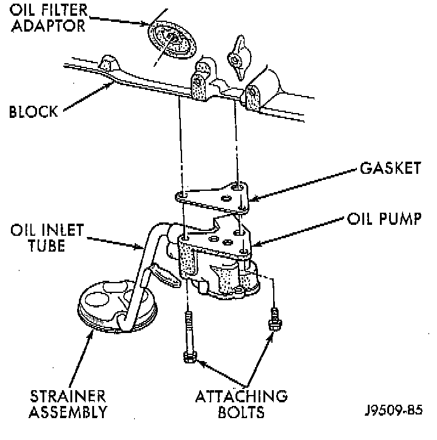

Oil Pump: Service and Repair

GENERAL INFORMATION
A gear-type oil pump is mounted at the underside of the cylinder block opposite the No.4 main bearing. The pump incorporates a nonadjustable pressure relief valve to limit maximum pressure to 517 kPa (75 psi). In the relief position, the valve permits oil to bypass through a passage in the pump body to the inlet side of the pump. Oil pump removal or replacement will not affect the distributor timing because the distributor drive gear remains in mesh with the camshaft gear.
REMOVAL
1. Drain the engine oil.
2. Remove the oil pan.
3. Remove the pump-to-cylinder block attaching bolts. Remove the pump assembly with gasket.
CAUTION: If the oil pump is not to be serviced, DO NOT disturb position of oil inlet tube and strainer assembly in pump body. If the tube is moved within the pump body, a replacement tube and strainer assembly must be installed to assure an airtight seal.
INSTALLATION
1. Install the oil pump on the cylinder block using a replacement gasket. Tighten the bolts to 23 Nm (17 ft. lbs.) torque.
2. Install the oil pan.
3. Fill the oil pan with oil to the specified level.